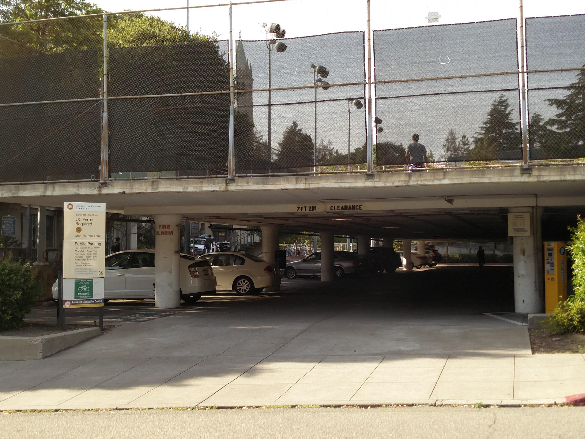

Driving
We recommend using Google Maps when driving to our campus. If you would like offline directions, please visit
this website and use the appropriate highway.
Parking
Public Parking Garages
We highly recommend using public parking garages as opposed to campus lots. While many campus lots are located closer to campus, public lots are often cheaper. We have researched and provided each parking lot available that is walking distance from our campus for your use. We have also conveniently sorted each lot by their daily parking rate in ascending order. Please keep in mind that the cheaper lots are generally smaller and tend to fill up quickly. We recommend using EPIC Parking or Library Gardens as they have more availability in parking spaces.
Campus Parking Lots
UC Berkeley has various campus parking lots scattered across campus. While these lots are conveniently and generally closer to campus, we recommend using public lots as an alternative. Should you choose to park on campus, we recommend using the Bancroft Parking Structure as it is a short walk from Dwinelle Plaza. Campus parking lots cost $20 for a full day pass.

Bart Options
UC Berkeley is conveniently located walking distance from a BART station! Parking at BART is free for the weekends. Unfortunately, the Downtown Berkeley BART Station does not have a parking lot, so you will need to BART in from another station with parking. Stations nearby with parking lots include Ashby Station and Rockridge Station. The cost of the fare is $3.90 per person round trip for both stations.